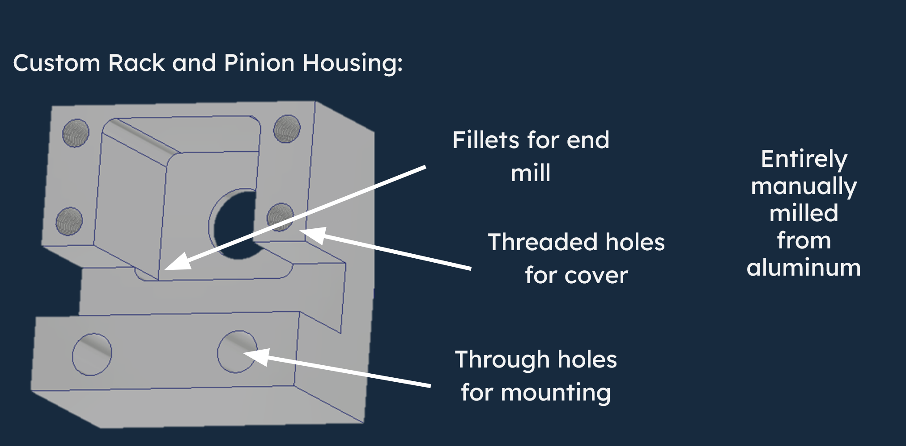
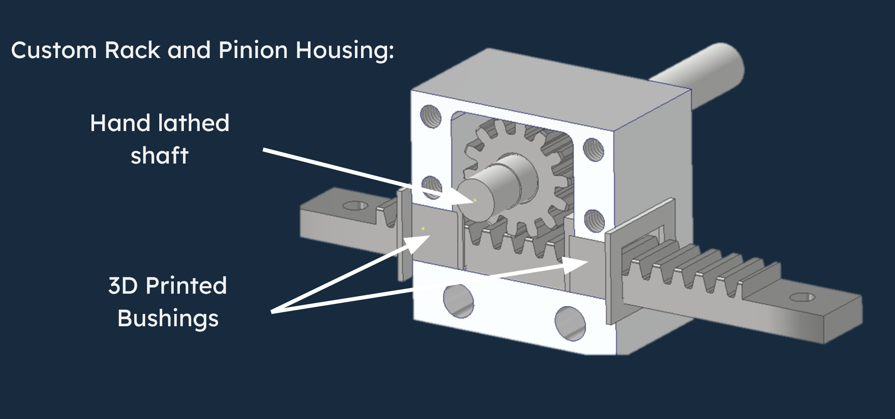

rack and pinion housing
custom steering housing designed around manufacturability and subsystem packaging. the housing was manually milled from aluminum and integrated with a hand-lathed shaft and 3d printed bushings to support the pinion assembly and rack travel.